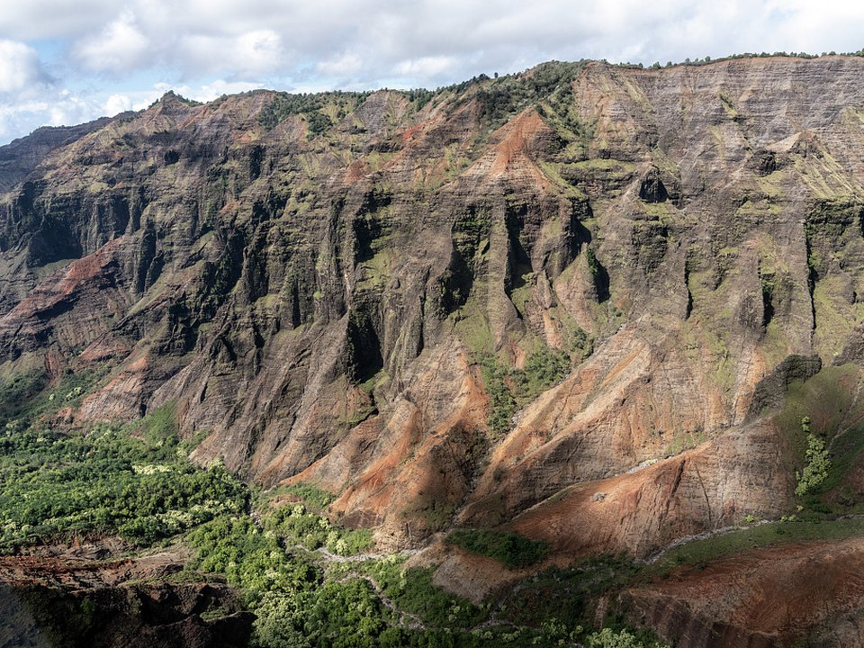

Poipu · Beachfront
Ko’a Kea Resort
A boutique resort on the sunny south shore.
Official details for Ko’a Kea ResortThe Garden Isle.
Kauai is the oldest and greenest of the main islands, with the deep red gorge of Waimea Canyon, the sheer Na Pali cliffs and the taro fields of Hanalei. Land at Lihue, stay on the sunny south shore at Poipu or the lush north shore at Hanalei, drive up to the canyon overlooks, take a boat along Na Pali and eat fresh fish by the bay.

Time illustration: direct distance at 150 KTAS plus 15 minutes for departure and arrival, matching the discovery page. Use ForeFlight for your actual flight plan.
PHLI (LIH), Lihue, is a towered airport at 152 feet with two 6,500-foot runways on the island’s east side, about 25 minutes from Poipu and an hour from Hanalei.
Lihue Airport, Lihue, HI
Another FBO: Signature Aviation (808-245-7440). Long over-water leg from Oahu (about 90 nm); carry flotation and file a flight plan. Mountain obscuration is common over the interior. 100LL and Jet A listed.
Hawaiian flying: steady trade winds with strong gusts and mechanical turbulence near terrain and in the channels between islands, afternoon showers and low clouds over the mountains, sudden obscuration in valleys, and long over-water legs. Carry life vests and consider a raft. Hawaii is about 2,100 nm of open ocean from California, beyond the range of most light aircraft. These guides are for Hawaii-based pilots and for visitors who rent or fly with a local operator, typically from Honolulu (PHNL), Kalaeloa (PHJR) or Kahului (PHOG).
Rates and availability need travel dates. Book early in winter.
A boutique resort on the sunny south shore.
Official details for Ko’a Kea ResortA clifftop resort above Hanalei Bay.
Official details for 1 Hotel Hanalei BayPrices and availability for your dates, through our partner Stay22. This is an affiliate link: we may earn a commission at no cost to you. The picks above are never paid.
Reserve weekend dinners.
Island-sourced cooking in Poipu.
Official details for Merriman’sFresh fish and a fish market by the river in Hanalei.
Official details for The DolphinGo early before the clouds build.
This prototype links to the local visitor site. It does not yet match events to your travel dates.
Best odds for clear canyon views.
Hawaii Tourism for Drier seasonHumpbacks offshore.
Hawaii Tourism for Whale seasonCalmer seas on the north shore.
Hawaii State Parks for Na Pali boat seasonCheck the local calendar when choosing a weekend, and confirm dates and tickets with the organizer.
A sample Kauai weekend. Written for Hawaii-based pilots and visitors already in the islands. No bookings or availability confirmed.
Land at PHLI early.
Waimea Canyon overlooks.
Lunch in Poipu, then back to the airport.
Land at PHLI, subject to weather and your actual flight plan.
Poipu beach.
Dinner at Merriman’s.
Waimea Canyon overlooks, early.
A Na Pali boat trip.
Dinner at The Dolphin in Hanalei.
Hanalei Bay at sunrise.
Allow time at the airport.
Afternoon clouds cover the mountains; plan the crossing to Oahu early.
A Na Pali boat trip.
Hanalei.
Dinner at Merriman's.
These details make the difference between an appealing list and a usable getaway.
Lodging, car and a Na Pali boat.
About 90 nm of water from Oahu.
Mountain clouds build by afternoon.
April to October.
Picks and links reviewed by WingAway Weekends. Hours, prices, menus and availability change often, so confirm directly with each place before booking. Spotted something out of date, or have a favorite we missed? Email us at hello@wingawayweekends.com.
WingAway Weekends helps you discover the destination. Use ForeFlight and current official aviation information for route, performance, weather, NOTAMs and preflight decisions. Flight planning and PIC responsibility stay with the pilot.